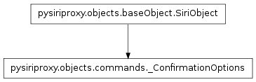
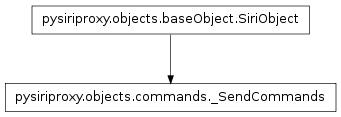
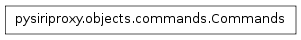
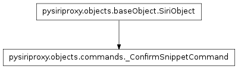
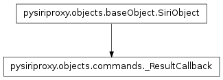
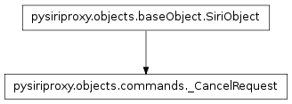

The commands module¶
The commands module contains classes pertaining to creating objects which can be sent to the iPhone or Apple’s web server which pertain to creating commands which are sent from the iPhone to Apple’s web server.
The _ConfirmationOptions class¶

- class pysiriproxy.objects.commands._ConfirmationOptions(submitCmds=None, cancelCmds=None, denyCmds=None, confirmCmds=None, denyText='Cancel', cancelLabel='Cancel', submitLabel='Send', confirmText='Send', cancelTrigger='Deny')[source]¶
The _ConfirmationOptions class provides the ability to create a dialog that presents the user with confirmation options such as: submit, and cancel buttons that each perform different actions.
The _SendCommands class¶

The SiriObject class¶

- class pysiriproxy.objects.commands.SiriObject(className, group)¶
The SiriObject class encapsulates the base functionality for all object being sent to the iPhone or to Apple’s web server.
Note
This class is meant to be subclassed to provide the implementation for a specific object.
- ProtocolVersion¶
The identifier which indicates the version of the protocol.
- classmethod isArgumentList(obj)¶
Determine if the given object is a list of arguments, or not.
- obj – The object
- classmethod isSiriObject(obj)¶
Determine if the given object is a SiriObject, or not.
- obj – The object
- makeRoot(refId=None, aceId=None)¶
Make the SiriObject the root object.
- refId – The refId for this object
- aceId – The aceId for this object
- setAceId(aceId=None)¶
Set the ace id for this object.
- aceId – The aceId for this object
- setNonNoneArguments(argumentNames, localVars)¶
Takes a list of strings which represent names of input variables and sets properties of the same name on the current object if the value of the argument is not None.
- argumentNames – The list of argument names to set
- localVars – The local variables
- setRefId(refId=None)¶
Set the ref id for this object.
- refId – The refId for this object
- toDict()¶
Convert this object into a Python dictionary.
The Commands class¶

- class pysiriproxy.objects.commands.Commands[source]¶
The Commands class contains the various types of Commands as well as a function for creating Commands of a specific type.
This class provides a factory method for creating Commands of a specific type.
- CancelRequest¶
The CancelRequest command type.
- CancelSnippet¶
The CancelSnippet command type.
- ConfirmSnippet¶
The ConfirmSnippet command type.
- ConfirmationOptions¶
The ConfirmationOptions command type.
- ResultCallback¶
The ResultCallback command type.
- SendCommands¶
The SendCommands command type.
The _ConfirmSnippetCommand class¶

The _ResultCallback class¶

The _CancelRequest class¶
